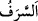
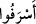
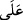
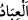
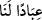

büyüklük taslamış ve inkârcılardan olmuştun.
60. Kıyamet gününde Allah hakkında yalan söyleyenlerin yüzlerinin kapkara
olduğunu görürsün. Kibirlenenlerin kalacağı yer cehennemde değil midir?
61. Allah, takvâ sâhiplerini esenliğe kavuşturup kurtuluşa erdirir. Onlara hiçbir
fenalık dokunmaz. Onlar mahzun da olmazlar.
62. Allah her şeyin yaratıcısıdır. O, her şeye vekîldir.
63. Göklerin ve yerin anahtarları (mutlak hükümranlığı) O’nundur. Allah’ın
âyetlerini inkâr edenler var ya, işte onlar hüsrana uğrayanlardır.
“De ki: Ey kendi nefisleri aleyhine haddi aşan kullarım!”
Râğıb der ki: “
” her ne kadar harcama konusunda meşhur olmuşsa da insanın
yaptığı her şeyde haddi aşmak demektir. Allah Teâlâ’nın bu kavli mallarda ve diğer
hususlardaki isrâfı içine alır.”
“
” fiilinin “
” harf-i cerri ile müteaddî yapılması, suç anlamını içerdiği içindir.
Mânâ ise: Ey mâsiyetlere dalıp büyük ve çirkin günahlar işlemek sûretiyle suç işlemede
nefislerine karşı aşırı gidenler, demektir.
Beyzâvî ve ona tâbî olanlar: “Kur’an ıstılahında “
(kullar)” kelimesinin Allah’a
izâfe edilmesi, onu mü’minler has hâle getirir.” demişlerdir. Fakir (Bursevî) der ki:
“Bunlardan ilkinin zamanı gelince, üzerinize güçlü kuvvetli kullarımızı
gönderdik.” (el-İsrâ, 17/5) âyeti, bunun aksini göstermektedir. Çünkü burada geçen
“kullar” Buhtunnassar ve kavmidir. Onlar ise ittifakla kâfirdiler. Bununla birlikte (“
”da olduğu gibi) vâsıtalı izâfetle diğerleri arasında fark bulunduğu iddiâ edilebilir.
el-Vasît’ta şöyle der: “Bütün müfessirlere göre bu âyet müslüman oldukları takdirde
daha önce işledikleri şirk, cana kıyma, zinâ, Hz. Peygamber (s.a.)’e düşmanlık ve
O’nunla savaşmak gibi büyük günahların bağışlanmayacağından korkan bir topluluk
hakkında indirilmiştir. İşte bunun üzerine Allah bu âyeti indirmiş, bu âyetten dolayı Hz.
Peygamber (a.s.) sevinmiş, ashab da bu âyeti günahların bağışlanması ile ilgili en
kapsamlı âyet olarak görmüştür.”
et-Tekmile’de der ki: “Rivâyet edildiğine göre Hz. Hamza (r.a.)’ın katili Vahşî, Hz.
Peygamber (a.s.)’a, tevbesinin kabul edilip edilmeyeceğini sormak üzere bir mektup
yazdı. Allah’ın Mekke’de indirip de kendisinin işittiği şu iki âyetin bütün hayırlardan
ümidini kestiğini belirtti: “Onlar ki Allah’la beraber başka bir ilâha yalvarmazlar,
Allah’ın haram kıldığı cana haksız yere kıymazlar ve zinâ etmezler. Bunları yapan,
günahının cezâsını bulacaktır! Kıyamet günü azâbı kat kat arttırılacak ve o azapta
alçaltılmış olarak kalacaktır!” (el-Furkân, 25/68-69) Bunun üzerine bir sonraki:
“Ancak tevbe ederek îman edip sâlih davranışlarda bulunanlar müstesnâ” âyeti
nâzil oldu. Rasûlullah (a.s.) da bu âyeti yazdırıp Vahşî’ye gönderdi. Bunun üzerine
Vahşî korktu ve ‘Belki ben sâlih amel işleyecek kadar yaşamam.’ dedi. Ardından Allah